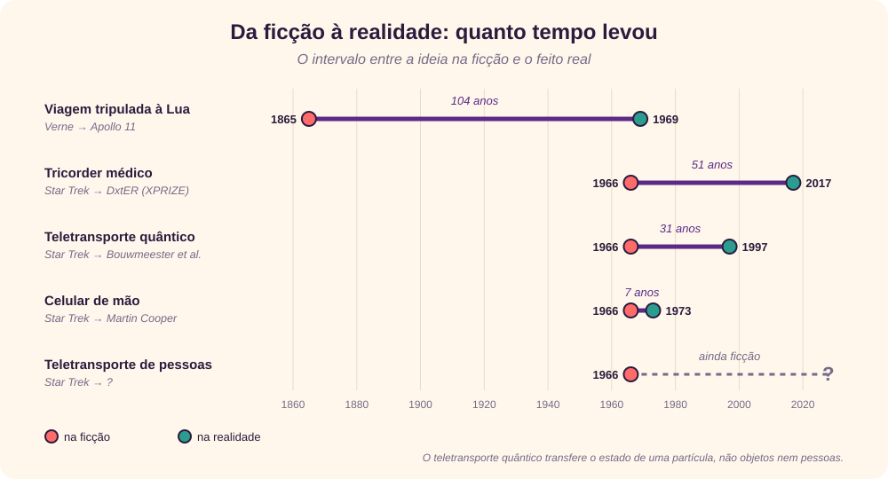

Da ficção à pesquisa
Toda geração imagina o seu futuro no condicional: um dia iríamos à Lua, falaríamos com qualquer pessoa do bolso, as máquinas pensariam. Parte desse futuro do pretérito virou presente. Parte continua imperfeita.
Nesta entrevista, Giovani Perotto Mesquita discute quando e como o futuro deixa a ficção e se torna realidade: da matemática que ainda não tem resposta aos grandes desafios da física e da IA, passando pelas distopias que moldaram o nosso imaginário.
Por que o título “O futuro do pretérito imperfeito”?
Porque é o tempo verbal de quem imagina. O futuro do pretérito fala do que seria: “um dia a gente iria à Lua”, “um dia as máquinas pensariam”. E ele é imperfeito porque está sempre inacabado: cada previsão que se cumpre abre outras que ainda não se cumpriram.
Desde Júlio Verne, pensar o futuro é ficção e realizá-lo é pesquisa. Como acontece essa passagem?
Verne é o melhor exemplo. Em Da Terra à Lua, de 1865, Verne imaginou três tripulantes lançados da Flórida rumo à Lua por um canhão chamado Columbiad. Cento e quatro anos depois, a Apollo 11 partiu da Flórida com três astronautas, e o módulo de comando se chamava Columbia. [26] A ficção faz a pergunta certa; a pesquisa leva décadas para encontrar a resposta de engenharia.

Esse intervalo está diminuindo?
Em alguns casos, muito. O comunicador de Star Trek estreou na TV em 1966; sete anos depois, em 3 de abril de 1973, Martin Cooper, da Motorola, fez a primeira ligação pública de um celular de mão, em Nova York. [19] O tricorder médico da série levou mais tempo: só em 2017 um aparelho capaz de diagnosticar dezenas de condições venceu o Tricorder XPRIZE, um concurso inspirado nele. [28] Mas é preciso cuidado com as comparações: o teletransporte quântico, demonstrado em 1997, transfere o estado de uma partícula, não objetos, muito menos pessoas. [4]
Existe um jeito de prever quando uma ideia vai sair do papel?
Existem boas heurísticas. A lei de Amara diz que tendemos a superestimar o efeito de uma tecnologia no curto prazo e a subestimá-lo no longo prazo. [1] E o físico Michio Kaku propôs classificar as “impossibilidades” em três classes, conforme o que a física permite: [15]
| Classe | O que significa | Exemplos |
|---|---|---|
| Classe I | Não viola as leis conhecidas da física; pode surgir em décadas ou em um século | Invisibilidade, teletransporte, telepatia, robôs |
| Classe II | No limite do que entendemos da física; talvez em milhares ou milhões de anos | Naves mais rápidas que a luz, buracos de minhoca, viagem no tempo |
| Classe III | Viola as leis da física como as conhecemos hoje | Moto-perpétuo, precognição |
A matemática ainda sem resposta
Por que falar de matemática numa conversa sobre o futuro?
Porque boa parte do futuro depende de perguntas que a matemática ainda não respondeu. Em 1900, David Hilbert apresentou uma lista de 23 problemas que orientou a matemática do século 20. Em 2000, o Clay Mathematics Institute repetiu o gesto com os sete Problemas do Milênio, oferecendo 1 milhão de dólares para cada solução. [6]
![Sete cartões com os Problemas do Milênio do Clay Mathematics Institute, de 2000, cada um com prêmio de 1 milhão de dólares. Em aberto: hipótese de Riemann, sobre a distribuição dos números primos; P versus NP, se verificar uma resposta é tão fácil quanto encontrá-la; Navier–Stokes, sobre as equações dos fluidos; Yang–Mills e a lacuna de massa, base matemática da física de partículas; conjectura de Hodge; e Birch e Swinnerton-Dyer, sobre curvas elípticas. Resolvida: conjectura de Poincaré, por Perelman em 2003, que recusou o prêmio em 2010.](rc_images/FuturoProblemasMilenio.svg)
Quantos já foram resolvidos?
Só um. Grigori Perelman provou a conjectura de Poincaré em trabalhos publicados entre 2002 e 2003. O instituto concedeu o prêmio a Perelman em 2010, e o prêmio foi recusado porque o matemático Richard Hamilton, cujo trabalho serviu de base para a prova, não foi premiado junto. Os outros seis seguem em aberto. [6]
Algum deles afeta o nosso dia a dia?
P versus NP, diretamente. A pergunta é se todo problema cuja resposta é fácil de verificar também é fácil de resolver. Boa parte da criptografia que protege bancos e mensagens parte do pressuposto de que certos problemas são fáceis de verificar e difíceis de resolver. Uma prova de que P = NP, acompanhada de um algoritmo prático, abalaria essa base. A prova contrária confirmaria limites que nem a IA mais avançada conseguiria ultrapassar.
Os quatro grandes desafios
Quais são os desafios que ainda separam a ficção da realidade?
Escolhi quatro que aparecem em todo filme de ficção científica: a computação quântica efetiva, uma IA onisciente, o teletransporte e a comunicação por entrelaçamento quântico. Eles estão em estágios muito diferentes: alguns já são parcialmente realidade; outros esbarram em leis da física.
![Matriz com os quatro desafios nas linhas e três colunas: já é realidade, em construção e barrado pela física. Computação quântica efetiva: correção de erros abaixo do limiar com o Willow, em 2024; máquina tolerante a falhas prevista pela IBM para 2029. IA onisciente: IA que supera humanos em tarefas específicas; IA geral com previsões entre 2029 e 2047; onisciência barrada pelos limites de Gödel e Turing. Teletransporte: de estados quânticos desde 1997 e por satélite em 2017; de pessoas não viola a física, mas está distante; copiar sem destruir o original é proibido pela não clonagem. Comunicação por entrelaçamento: distribuição de chaves quânticas com o satélite Micius; internet quântica global em construção; mensagem mais rápida que a luz barrada pelo teorema da não comunicação.](rc_images/FuturoDesafios.svg)
Computação quântica efetiva
Onde estamos na computação quântica?
Saindo do laboratório para a engenharia. Em dezembro de 2024, o Google apresentou o chip Willow, de 105 qubits, o primeiro a mostrar que a taxa de erro cai à medida que o sistema cresce, o chamado “abaixo do limiar”. Num teste de referência, ele fez em menos de cinco minutos um cálculo que levaria 10 septilhões de anos num supercomputador. [8] Mas esse teste foi desenhado para favorecer a máquina quântica e não tem aplicação prática.
E quando ela será “efetiva”?
Os roteiros públicos apontam para o fim da década. A IBM promete para 2029 o Starling, uma máquina tolerante a falhas com 200 qubits lógicos, capaz de executar 100 milhões de operações quânticas. [14] O impacto mais conhecido será na criptografia: em 2025, Craig Gidney estimou que uma chave RSA de 2048 bits poderia ser quebrada em menos de uma semana com menos de 1 milhão de qubits ruidosos, vinte vezes menos do que o próprio Gidney estimava em 2019. [7] Por isso o NIST publicou em 2024 os primeiros padrões de criptografia pós-quântica. [20]
IA onisciente
E a IA que sabe tudo?
Aqui é preciso separar duas coisas. Uma IA geral, capaz de igualar pessoas em qualquer tarefa intelectual, é uma meta de engenharia, e há quem a espere ainda nesta década. Já uma IA onisciente esbarra em limites lógicos. Em 1931, Kurt Gödel mostrou que todo sistema formal consistente capaz de expressar a aritmética contém verdades que ele não consegue provar. [24] Em 1936, Alan Turing mostrou que nenhum algoritmo consegue decidir, para qualquer programa, se ele vai terminar ou rodar para sempre. [25] Uma máquina, por mais poderosa, continua sujeita a esses limites: pode saber muito, mas não tudo.
Então a onisciência é ficção pura?
Como conceito absoluto, sim. O que é real, e já preocupa, é uma IA que parece saber tudo: responde com confiança sobre qualquer assunto, inclusive quando erra. Aí o desafio é menos técnico e mais humano: aprender a desconfiar de respostas que soam certas.
Teletransporte
O teletransporte já existe?
Existe, mas não como em Star Trek. Em 1993, Charles Bennett e colegas propuseram um protocolo para transferir o estado quântico de uma partícula para outra, distante, usando entrelaçamento. [2] Em 1997, o grupo de Anton Zeilinger o demonstrou com fótons. [4] Em 2017, cientistas chineses teletransportaram o estado de um fóton de uma estação no Tibete para o satélite Micius, a até 1.400 km de distância. [23]
![Diagrama do protocolo de teletransporte quântico. Uma fonte envia um par de partículas entrelaçadas, uma para Alice e outra para Bob. Alice tem uma partícula com o estado psi a enviar e faz uma medição conjunta com sua metade do par. Ela envia 2 bits por um canal clássico, no máximo à velocidade da luz. Bob usa esses bits para aplicar uma correção à sua metade e recebe o estado psi. Notas: o original de Alice é destruído, então não há cópia; sem os 2 bits, Bob só vê ruído, logo o entrelaçamento não envia mensagens.](rc_images/FuturoTeletransporte.svg)
E teletransportar uma pessoa?
Kaku classifica o teletransporte como uma impossibilidade de Classe I: não viola nenhuma lei da física. [15] Mas há um detalhe: o teorema da não clonagem, de Wootters e Zurek, de 1982, mostra que não é possível copiar um estado quântico desconhecido. [27] No teletransporte, o original é destruído no ponto de partida. Transportar uma pessoa exigiria ler e reconstruir o estado de um número astronômico de átomos, destruindo o original no caminho. O obstáculo é mais de engenharia e de filosofia do que de física.
Comunicação por entrelaçamento quântico
Dá para usar o entrelaçamento para se comunicar instantaneamente?
Não, e essa talvez seja a ideia mais repetida e mais equivocada da ficção científica. O teorema da não comunicação mostra que medir uma partícula entrelaçada não transmite informação à outra: cada lado vê apenas resultados aleatórios. [21] No teletransporte, Bob só reconstrói o estado depois de receber dois bits por um canal comum, que respeita a velocidade da luz.
Então o entrelaçamento não serve para comunicação?
Serve, mas para outra coisa: segurança. Em 2017, o mesmo satélite Micius distribuiu chaves criptográficas quânticas entre o espaço e a Terra, num esquema em que qualquer tentativa de espionagem deixa rastros. [18] O objetivo de longo prazo é uma internet quântica em escala global, capaz de conectar computadores quânticos entre si. [23]
Distopias científicas
Por que as distopias marcam mais do que as utopias?
Porque funcionam como alertas. A ficção otimista mostra o que queremos construir; a distópica mostra o preço de construir sem pensar. Escolhi quatro obras que cobrem os grandes medos da era digital, vigilância, simulação e máquinas indistinguíveis de nós, e, como contraponto, uma utopia.
![Faixa que vai da distopia à utopia, com quatro obras. 1984, publicado em 1949 e ambientado em 1984: vigilância total e controle da linguagem; já chegaram câmeras com reconhecimento facial e o capitalismo de vigilância. Matrix, de 1999, ambientado por volta de 2199: realidade simulada controlada por máquinas; já chegaram a realidade virtual e o argumento da simulação de Bostrom, de 2003. Blade Runner, de 1982, ambientado em 2019: androides indistinguíveis de humanos; já chegaram robôs humanoides, deepfakes e a dúvida sobre quem é humano. Star Trek, de 1966, ambientado no século 23: utopia de abundância e exploração; já chegaram celular, tablet, tradução simultânea e o tricorder do XPRIZE de 2017.](rc_images/FuturoDistopias.svg)
1984 envelheceu bem?
Assustadoramente bem. George Orwell publicou o livro em 1949, imaginando teletelas que vigiam cada cidadão. Hoje carregamos voluntariamente o dispositivo que nos observa. Shoshana Zuboff chamou esse modelo de “capitalismo de vigilância”: empresas que transformam a experiência humana em dados para prever e influenciar comportamentos. [29] A diferença é que o Grande Irmão de Orwell era o Estado; o de hoje é, muitas vezes, um modelo de negócio.
E Matrix?
Matrix, de 1999, levou ao cinema a pergunta sobre viver numa simulação. Poucos anos depois, o filósofo Nick Bostrom a formalizou: pelo menos uma de três hipóteses seria verdadeira. Ou a humanidade se extingue antes de chegar a uma fase “pós-humana”, ou civilizações pós-humanas não rodam simulações da sua própria história, ou quase certamente vivemos numa simulação. [3] É um argumento filosófico, não uma evidência, mas mostra como a ficção empurra a pesquisa.
Blade Runner se passa em 2019. O que ele acertou?
O filme de Ridley Scott, de 1982, baseado no livro de Philip K. Dick, imaginou androides, os replicantes, que só um teste de empatia distinguia de humanos. Não temos replicantes, mas temos a mesma dúvida em outro formato: vozes, rostos e textos sintéticos que exigem ferramentas para separar o humano do artificial. O teste Voight-Kampff virou, na prática, o problema de detectar deepfakes.
Star Trek numa lista de distopias?
É a exceção proposital. Star Trek, de 1966, é uma utopia: um futuro de abundância em que a tecnologia resolveu a escassez. E é justamente a obra que mais antecipou objetos do nosso cotidiano, do comunicador ao tricorder. [28] Talvez porque a utopia descreve ferramentas, e a distopia descreve sistemas. As ferramentas chegam mais rápido.
O que pensam os grandes pensadores
O que os grandes pensadores de hoje dizem sobre o futuro?
Há pouco consenso, e isso já é uma informação. Sobre quando chega a IA geral, as estimativas vão de poucos anos a várias décadas. Ray Kurzweil mantém as datas que defende há décadas: IA de nível humano em 2029 e a singularidade, a fusão entre a inteligência humana e a das máquinas, em 2045. [16] Demis Hassabis, do Google DeepMind e Nobel de Química de 2024, falou em 2025 em cinco a dez anos. [11] Uma pesquisa com 2.778 pesquisadores de IA, publicada em 2024, estimou 10% de chance de máquinas superarem humanos em todas as tarefas até 2027 e 50% até 2047. [9] Yann LeCun, por sua vez, acha que os modelos de linguagem atuais não chegarão lá e que faltam ideias novas. [17]
![Dois painéis. Em cima, quando chega a IA geral, numa linha do tempo de 2025 a 2050: Ray Kurzweil prevê IA geral em 2029 e a singularidade em 2045; Demis Hassabis fala em 5 a 10 anos a partir de 2025; a pesquisa de Grace e colegas com 2.778 pesquisadores dá 10% de chance até 2027 e 50% até 2047; Yann LeCun diz que não será com os modelos de linguagem atuais. Embaixo, uma faixa de risco de exagerado a existencial: LeCun chama o risco de besteira completa; Harari vê a IA como inteligência alienígena; Hawking disse em 2014 que ela pode significar o fim da raça humana; Hinton estima de 10 a 20% de chance de extinção em 30 anos.](rc_images/FuturoPensadores.svg)
E sobre os riscos?
O espectro é ainda mais amplo. Em 2014, Stephen Hawking disse à BBC que o desenvolvimento de uma IA completa “poderia significar o fim da raça humana”. [12] Geoffrey Hinton, Nobel de Física de 2024, estimou em dezembro daquele ano uma chance de 10% a 20% de a IA levar à extinção humana nos próximos 30 anos. [13] No outro extremo, LeCun chamou esses temores de “besteira completa”. [17] Yuval Noah Harari fica no meio: em Nexus, de 2024, descreve a IA como uma “inteligência alienígena”, capaz de tomar decisões sozinha dentro das redes de informação que organizam a sociedade. [10]
Em quem acreditar?
Em ninguém isoladamente. Arthur C. Clarke deixou uma pista na sua primeira lei: quando um cientista distinto e idoso diz que algo é possível, quase certamente está certo; quando diz que algo é impossível, muito provavelmente está errado. [5] E William Gibson resumiu o resto numa frase: [22]
“O futuro já chegou. Só não está distribuído de forma igual.”
Conclusões
Então, quando o futuro deixa a ficção?
Quando três condições se encontram: a física permite, a matemática sustenta e alguém paga a engenharia. A viagem à Lua esperou um século por foguetes e por uma corrida espacial. O celular esperou só a miniaturização. O teletransporte de pessoas espera muito mais do que dinheiro, e a comunicação mais rápida que a luz talvez espere para sempre.
Qual é a lição para quem trabalha com tecnologia?
Separar o que é engenharia do que é física, e o que é física do que é marketing. A computação quântica é engenharia difícil; a comunicação instantânea por entrelaçamento é proibida pela física; a IA onisciente é um conceito que a lógica recusa. Saber em que classe cada promessa está é a melhor proteção, tanto contra o entusiasmo quanto contra o medo.
“Qualquer tecnologia suficientemente avançada é indistinguível da magia.” — Arthur C. Clarke
O futuro do pretérito vai continuar imperfeito, e isso é bom: é o que mantém a ficção sonhando e a pesquisa trabalhando.
↑ Voltar ao topoReferências
- IEEE Computer Society, “Amara’s Law and Its Place in the Future of Tech”, 2024, computer.org.
- Bennett, C. H. et al., “Teleporting an unknown quantum state via dual classical and Einstein-Podolsky-Rosen channels”, março de 1993, Physical Review Letters 70, 1895.
- Bostrom, N., “Are You Living in a Computer Simulation?”, 2003, The Philosophical Quarterly 53(211).
- Bouwmeester, D. et al., “Experimental quantum teleportation”, dezembro de 1997, Nature 390, 575.
- The Encyclopedia of Science Fiction, “Clarke’s Laws”, sf-encyclopedia.com.
- Clay Mathematics Institute, “The Millennium Prize Problems”, claymath.org.
- Gidney, C., “How to factor 2048 bit RSA integers with less than a million noisy qubits”, maio de 2025, arXiv:2505.15917.
- Google, “Meet Willow, our state-of-the-art quantum chip”, dezembro de 2024, blog.google.
- Grace, K. et al., “Thousands of AI Authors on the Future of AI”, janeiro de 2024, arXiv:2401.02843.
- Harari, Y. N., “Nexus: A Brief History of Information Networks from the Stone Age to AI”, setembro de 2024, ynharari.com.
- CNBC, “AI that can match humans at any task will be here in five to 10 years, Google DeepMind CEO says”, março de 2025, cnbc.com.
- TIME, “Stephen Hawking Says Artificial Intelligence Could End Human Race”, dezembro de 2014, time.com.
- Forbes, “Geoffrey Hinton Predicts Human Extinction At The Hands Of AI”, dezembro de 2024, forbes.com.
- IBM Quantum, “IBM lays out clear path to fault-tolerant quantum computing”, junho de 2025, ibm.com.
- Kaku, M., “Physics of the Impossible”, 2008, resumo: Wikipedia.
- Science Friday, “‘The Singularity is Nearer,’ Says Futurist Ray Kurzweil”, junho de 2024, sciencefriday.com.
- TechCrunch, “Meta’s Yann LeCun says worries about AI’s existential threat are ‘complete B.S.’”, outubro de 2024, techcrunch.com.
- Liao, S.-K. et al., “Satellite-to-ground quantum key distribution”, agosto de 2017, Nature 549, 43.
- Wikipedia, “DynaTAC”, en.wikipedia.org.
- NIST, “Post-Quantum Cryptography FIPS Approved”, agosto de 2024, csrc.nist.gov.
- Wikipedia, “No-communication theorem”, en.wikipedia.org.
- Quote Investigator, “The Future Has Arrived — It’s Just Not Evenly Distributed Yet”, janeiro de 2012, quoteinvestigator.com.
- Ren, J.-G. et al., “Ground-to-satellite quantum teleportation”, setembro de 2017, Nature 549, 70.
- Stanford Encyclopedia of Philosophy, “Gödel’s Incompleteness Theorems”, plato.stanford.edu.
- Stanford Encyclopedia of Philosophy, “Turing Machines”, plato.stanford.edu.
- Wikipedia, “From the Earth to the Moon”, en.wikipedia.org.
- Wootters, W. K.; Zurek, W. H., “A single quantum cannot be cloned”, outubro de 1982, Nature 299, 802.
- XPRIZE Foundation, “Qualcomm Tricorder XPRIZE”, xprize.org.
- Zuboff, S., “The Age of Surveillance Capitalism”, 2019, resumo: Wikipedia.
![Seven cards with the Clay Mathematics Institute’s Millennium Prize Problems, from 2000, each carrying a 1 million dollar prize. Open: the Riemann hypothesis, on the distribution of primes; P versus NP, whether checking an answer is as easy as finding it; Navier–Stokes, on the fluid equations; Yang–Mills and the mass gap, the mathematical basis of particle physics; the Hodge conjecture; and Birch and Swinnerton-Dyer, on elliptic curves. Solved: the Poincaré conjecture, by Perelman in 2003, who declined the prize in 2010.](rc_images/FuturoProblemasMilenio-en.svg)
![Matrix with the four challenges as rows and three columns: already real, being built and ruled out by physics. Practical quantum computing: error correction below threshold with Willow in 2024; a fault-tolerant machine planned by IBM for 2029. Omniscient AI: AI that beats humans at specific tasks; general AI with forecasts between 2029 and 2047; omniscience ruled out by the limits of Gödel and Turing. Teleportation: of quantum states since 1997 and via satellite in 2017; of people breaks no law of physics but is far off; copying without destroying the original is forbidden by no-cloning. Entanglement communication: quantum key distribution with the Micius satellite; a global quantum internet being built; faster-than-light messages ruled out by the no-communication theorem.](rc_images/FuturoDesafios-en.svg)
![Diagram of the quantum teleportation protocol. A source sends a pair of entangled particles, one to Alice and one to Bob. Alice holds a particle in state psi to be sent and makes a joint measurement with her half of the pair. She sends 2 bits over a classical channel, at most at the speed of light. Bob uses those bits to apply a correction to the other half of the pair and ends up with state psi. Notes: Alice’s original is destroyed, so there is no copy; without the 2 bits Bob sees only noise, so entanglement sends no messages.](rc_images/FuturoTeletransporte-en.svg)
![A band running from dystopia to utopia, with four works. 1984, published in 1949 and set in 1984: total surveillance and control of language; facial-recognition cameras and surveillance capitalism have already arrived. The Matrix, from 1999, set around 2199: simulated reality run by machines; virtual reality and Bostrom’s 2003 simulation argument have arrived. Blade Runner, from 1982, set in 2019: androids indistinguishable from humans; humanoid robots, deepfakes and doubt about who is human have arrived. Star Trek, from 1966, set in the 23rd century: a utopia of abundance and exploration; cell phones, tablets, live translation and the 2017 XPRIZE tricorder have arrived.](rc_images/FuturoDistopias-en.svg)
![Two panels. Top, when general AI arrives, on a timeline from 2025 to 2050: Ray Kurzweil predicts general AI in 2029 and the singularity in 2045; Demis Hassabis speaks of 5 to 10 years from 2025; the survey by Grace and colleagues of 2,778 researchers gives a 10% chance by 2027 and 50% by 2047; Yann LeCun says it will not come from today’s language models. Bottom, a risk band from overblown to existential: LeCun calls the risk complete B.S.; Harari sees AI as alien intelligence; Hawking said in 2014 it could spell the end of the human race; Hinton puts the chance of extinction within 30 years at 10 to 20%.](rc_images/FuturoPensadores-en.svg)

![Sette schede con i Problemi del Millennio del Clay Mathematics Institute, del 2000, ciascuno con un premio di 1 milione di dollari. Aperti: l’ipotesi di Riemann, sulla distribuzione dei numeri primi; P contro NP, se verificare una risposta è facile quanto trovarla; Navier–Stokes, sulle equazioni dei fluidi; Yang–Mills e il gap di massa, base matematica della fisica delle particelle; la congettura di Hodge; e Birch e Swinnerton-Dyer, sulle curve ellittiche. Risolto: la congettura di Poincaré, da Perelman nel 2003, che ha rifiutato il premio nel 2010.](rc_images/FuturoProblemasMilenio-it.svg)
![Matrice con le quattro sfide nelle righe e tre colonne: già realtà, in costruzione ed escluso dalla fisica. Computazione quantistica efficace: correzione d’errore sotto soglia con Willow nel 2024; macchina tollerante ai guasti prevista da IBM per il 2029. IA onnisciente: IA che supera gli umani in compiti specifici; IA generale con previsioni tra il 2029 e il 2047; onniscienza esclusa dai limiti di Gödel e Turing. Teletrasporto: di stati quantistici dal 1997 e via satellite nel 2017; di persone non viola la fisica ma è lontano; copiare senza distruggere l’originale è vietato dal teorema di no-cloning. Comunicazione via entanglement: distribuzione quantistica di chiavi con il satellite Micius; internet quantistico globale in costruzione; messaggi più veloci della luce esclusi dal teorema di non comunicazione.](rc_images/FuturoDesafios-it.svg)
![Schema del protocollo di teletrasporto quantistico. Una sorgente invia una coppia di particelle entangled, una ad Alice e una a Bob. Alice ha una particella nello stato psi da inviare e fa una misura congiunta con la sua metà della coppia. Invia 2 bit su un canale classico, al massimo alla velocità della luce. Bob usa quei bit per applicare una correzione alla sua metà e ottiene lo stato psi. Note: l’originale di Alice è distrutto, quindi non c’è copia; senza i 2 bit Bob vede solo rumore, perciò l’entanglement non invia messaggi.](rc_images/FuturoTeletransporte-it.svg)
![Una fascia che va dalla distopia all’utopia, con quattro opere. 1984, pubblicato nel 1949 e ambientato nel 1984: sorveglianza totale e controllo del linguaggio; sono già arrivati telecamere con riconoscimento facciale e capitalismo della sorveglianza. Matrix, del 1999, ambientato verso il 2199: realtà simulata controllata dalle macchine; sono arrivati la realtà virtuale e l’argomento della simulazione di Bostrom del 2003. Blade Runner, del 1982, ambientato nel 2019: androidi indistinguibili dagli umani; sono arrivati robot umanoidi, deepfake e il dubbio su chi è umano. Star Trek, del 1966, ambientato nel XXIII secolo: utopia di abbondanza ed esplorazione; sono arrivati cellulare, tablet, traduzione simultanea e il tricorder dell’XPRIZE del 2017.](rc_images/FuturoDistopias-it.svg)
![Due pannelli. In alto, quando arriva l’IA generale, su una linea del tempo dal 2025 al 2050: Ray Kurzweil prevede l’IA generale nel 2029 e la singolarità nel 2045; Demis Hassabis parla di 5-10 anni dal 2025; l’indagine di Grace e colleghi su 2.778 ricercatori dà il 10% di probabilità entro il 2027 e il 50% entro il 2047; Yann LeCun dice che non arriverà dagli attuali modelli linguistici. In basso, una fascia di rischio da esagerato a esistenziale: LeCun lo definisce una sciocchezza totale; Harari vede l’IA come intelligenza aliena; Hawking disse nel 2014 che potrebbe segnare la fine della razza umana; Hinton stima tra il 10 e il 20% la probabilità di estinzione entro 30 anni.](rc_images/FuturoPensadores-it.svg)